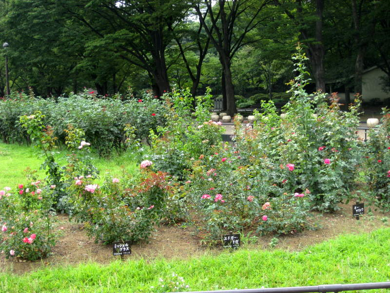
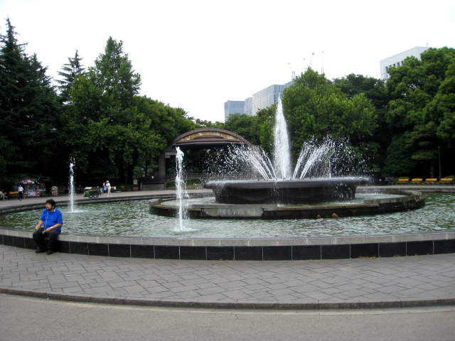
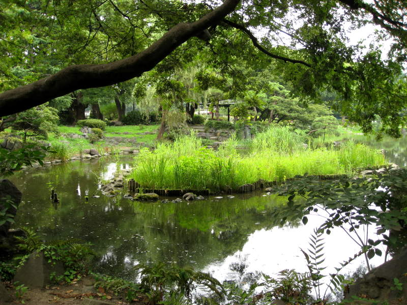
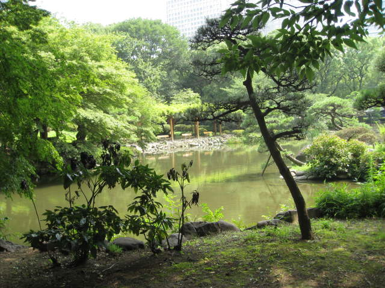
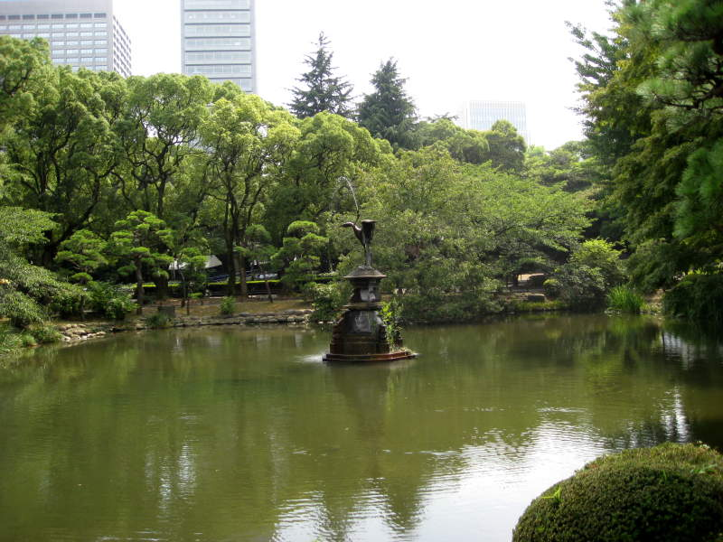
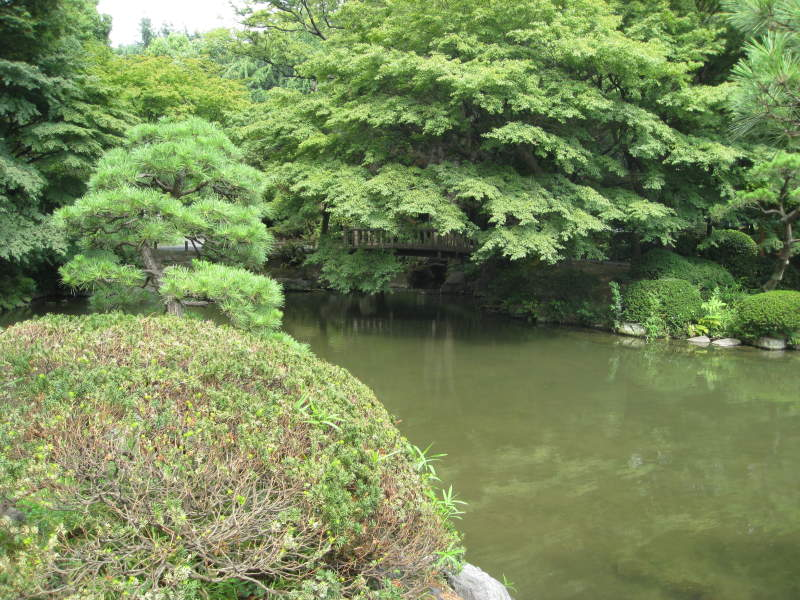
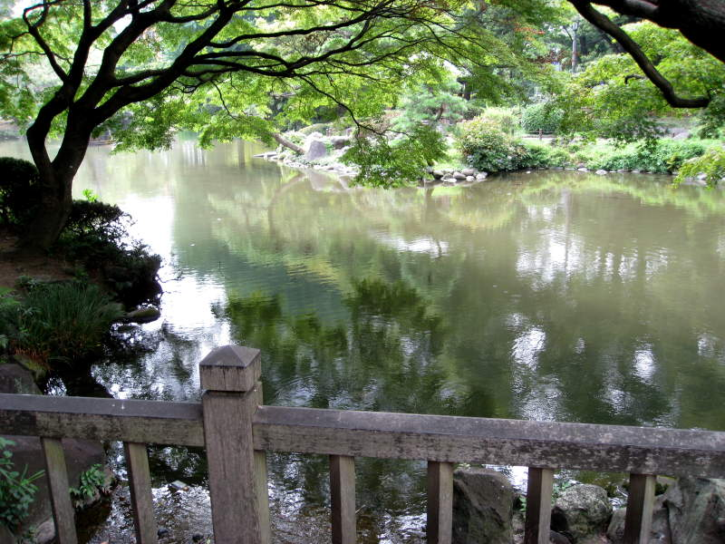
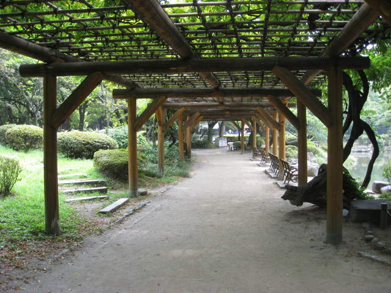
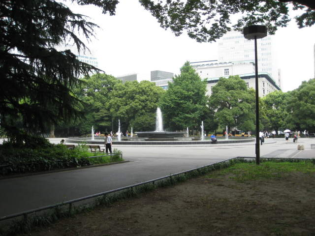

Hibiya Garden

Also
in my wanderings around central Tokyo, I came across a fairly
pedestrian little park area. I was searching for a very
impressive Japanese-style garden, but now I'm convinced that
Japanese-style gardens are not incredibly elaborate. Simplicity
and grace seems the focus. I found this little patch of flowers
there. Not too shabby.

This fountain, strategically arranged with the arched gate behind it, looked nice enough for a photo as well,

The mirror-like water snakes around a patch of grass that needs to be mowed.

More peaceful water shots.

This humble fountain makes the water even more peaceful.

A footbridge under tree-cover.

Here's a view from the footbridge.

A shady leafy walkway leads to a trash recepticle.

I passed by another fountain as I made my way out of Hibiya Garden.
Back